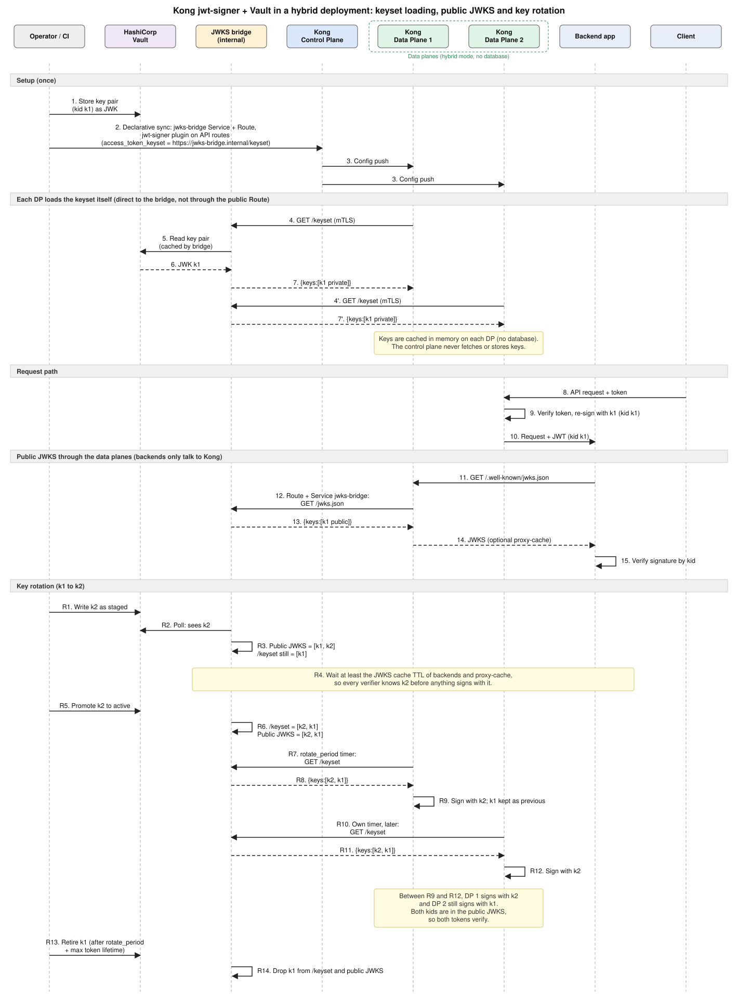

How it works
The plugin behaviour that makes an external keyset necessary, and the request paths through Kong.
Architecture


| Component | Role |
|---|---|
| Vault | Stores the key pairs in KV v2. |
| jwks-bridge | Reads Vault, caches, serves the keyset and the public JWKS. Two or more replicas. |
| Kong control plane | Holds the configuration. Never fetches keys. |
| Kong data planes | Fetch /keyset directly from the bridge, sign tokens, proxy /.well-known/jwks.json to the bridge. |
| Backend applications | Fetch the public JWKS through a data plane. |
jwt-signer behaviour this relies on
Read from the kong-ee source of the jwt-signer plugin:
access_token_keysetis a keyset name or anhttps://URL. An external signing key can only be supplied by URL.- The URL must return a top-level
keysarray. Private JWK members are kept, so the plugin can sign with them. - Vault KV v2 wraps secrets as
{data:{data:…}}, and Vault's own OIDC keys endpoint returns public keys only. Neither works as the keyset URL. - There is no Admin API route to import a key into a keyset, and the JWKS endpoint exists only on the Admin API.
- In hybrid mode data planes have no database; the default
kongkeyset would be a different key pair on each data plane. - Signing uses the first key that matches
access_token_signing_algorithm. The bridge returns the active key first. - Each data plane reloads the URL on its own
access_token_keyset_rotate_periodtimer.
Routing
/.well-known/jwks.json goes through a Kong Route, so backends only talk to Kong, and proxy-cache can absorb the load. /keyset is not routed through Kong: it returns private keys, and a data plane fetching its own signing keys through itself is circular. Data planes call it directly on the internal network, with mTLS or Basic auth.
Caching and Vault outages
- Each keyset is held as one immutable snapshot with precomputed bodies and ETags; handlers never lock.
- A refresher polls every
refresh_interval(default 30 s, ±10 % jitter) and skips parsing when the KV version is unchanged. Concurrent refreshes of a keyset share one Vault read. - A document that fails validation is rejected and the last good snapshot stays in place.
- If Vault is unreachable the last good snapshot keeps being served.
/readyzturns not-ready aftermax_stale(default 1 h);/healthzstays up.